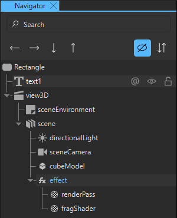
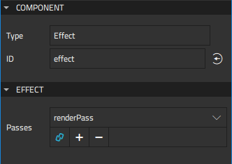
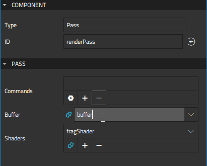
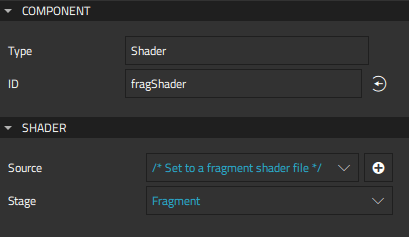
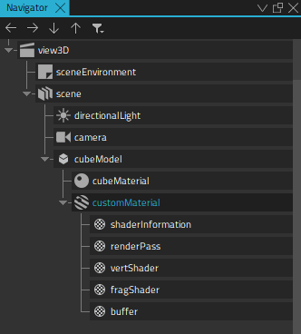
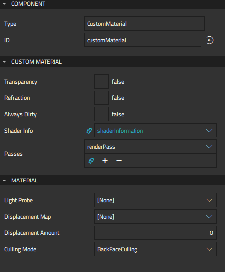
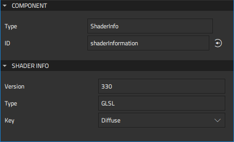
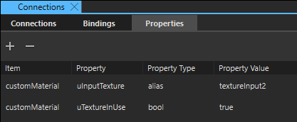

Custom Effects and Materials
The Qt Quick 3D Effects and Qt Quick 3D Materials modules contain a set of ready-made effects and materials that you can apply to 3D models. If the ready-made effects and materials don't meet your needs, you can create custom effects and materials. Each effect or material must have a fragment shader that implements all the functions needed to calculate the shaded color. The material system also offers ready-made functions to help you implement the material. If the 3D effects and materials are not displayed in Components, you should add the QtQuick3D.Effects and QtQuick3D.Materials modules to your project, as described in Adding and Removing Modules.
The material system supports dielectric, metallic, and transparent materials, point lights, area lights, ambient occlusion, shadowing, two-sided polygons, index-of-refraction, and fragment cutoff (masking). For more information, see Qt Quick 3D Custom Material Reference.
Use the components in Components > QtQuick3D > Qt Quick 3D Custom Shader Utils to create custom effects and materials. You can find the Effect component in Components > QtQuick3D Effects > Qt Quick 3D Custom Shader Utils, and the Custom Material component in Components> QtQuick3D Materials > Qt Quick 3D Custom Shader Utils. For more information about the shader utilities and commands and their properties, see Custom Shaders.
Note: You must create the actual shader source files with some other tool and copy them to your project folder. You can then specify the source file names in the custom effect or material properties. To use custom uniforms in the shader files, you must specify them as QML properties for the custom effect or material component. Qt Design Studio automatically generates the uniforms for the shaders based on the property values.
Creating Custom Effects
By default, a custom effect component contains a Pass component and a Shader component in the fragment stage. You can add passes, shaders, and other shader utilities to the effect.

The fragment shader component is created with a placeholder for the path to the shader file. Specify the path to the shader file to use in the shader properties.
To create a custom effect:
- Drag-and-drop an Effect component from the Qt Quick 3D Custom Shader Utils tab of Component to a Model component in Navigator.
- Select the custom effect component in Navigator to edit the values of its properties in the Properties view.

- In the Passes field, select the pass components for the effect.
- Select the pass component in Navigator to specify values for its properties in Properties.

- To execute commands during the pass, drag-and-drop the following command components from Component to the custom material in Navigator: Blending, Buffer Blit, Buffer Input, Cull Mode, Depth Input, Render State, and Set Uniform Value. Then select the commands in the Commands field.
- To allocate a buffer for the pass, drag-and-drop a Buffer component to the custom material. Then select the buffer in the Buffer field.
- Select the shader component in Navigator to set the path to the shader files in the Source field in Properties.

Creating Custom Materials
By default, a Custom Material component contains two Shader components, a Shader Info component, and a Pass component. You can add shaders, passes, and other shader utilities to the material.

By default, fragment and vertex shaders are created with placeholders for the paths to the shader files. Specify the paths to the shader files to use in the shader properties.
The Shader Info component specifies the shader component and version, as well as the options used by the shader based on the selected shader key values, such as diffuse or specular lighting, refraction, transparency, displacement, transmissiveness, glossiness, and alpha cutout.
The shaders are used with the Pass component to create the resulting material. A pass can contain multiple rendering passes and other commands. You can use a Buffer component to allocate a buffer for storing intermediate rendering results.
To create a custom material:
- Drag-and-drop a Custom Material component from the Qt Quick 3D Custom Shader Utils tab of Component to a Model component in Navigator.
- Select the custom material component in Navigator to edit the values of its properties in the Properties view.

- Select the Transparency check box to make the material transparent.
- Select the Refraction check box to specify that the material is reflective.
- Select the Always dirty check box to determine that the material needs to be refreshed every time it is used.
- In the Shader Info field, select the shader info component to use.
- In the Passes field, select the pass components for the effect.
- In the Material group, select the light probe, displacement map and amount, and culling mode to use.
- Select the shader info component in Navigator to specify values for its properties in Properties.

- Select the pass component in Navigator to specify values for its properties in Properties.
- To execute commands during the pass, drag-and-drop the following command components from Component to the pass component in Navigator: Blending, Buffer Blit, Buffer Input, Cull Mode, Depth Input, Render State, and Set Uniform Value. The command components are created at the same level as the pass component and automatically added to the Commands field.
- To allocate a buffer for the pass, drag-and-drop a Buffer component to the custom material. Then select the buffer in the Buffer field.
- To add a shader to the pass, drag-and-drop the Shader component from the Component to the pass component in Navigator. The shader components are created at the same level as the pass component and automatically added to the Shaders field.
- Select the shader components in Navigator to set the paths to the shader files in the Source field in Properties.
Creating Shader Files
The requirements set for shaders that you can use in custom effects and materials are described in Qt Quick 3D Custom Material Reference.
If you use custom uniforms in the shader files, you must specify them as QML properties for the custom effect or material component. Qt Design Studio automatically generates the uniforms based on the property values.
For example, the following code snippet shows fragment shader code that uses two uniforms: uTextureInUse and uInputTexture.
out vec4 fragColor; in vec3 pos; in vec3 texCoord0; void main() { vec4 textCol; if (uTextureInUse) textCol = texture( uInputTexture, texCoord0.xy ); fragColor = vec4(pos.x * 0.02 * textCol.x, pos.y * 0.02 * textCol.y, pos.z * 0.02, 1.0); }
To use the above fragment shader in a custom effect or material component, you must remove the uniforms from the shader code and define them as properties for the component on the Properties tab in the Connections view.

For more information about adding properties, see Specifying Custom Properties.